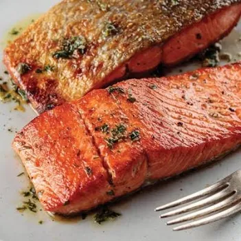

Easy Salmon Filet

My Wife's favorite salmon recipe
This recipe goes pan-to-oven, so you need a good pan that you can use for both. I prefer cast-iron, but quality stainless steel is great, too. We make a delicious crust on the flesh first, then bake it the rest of the way for a juicy finish.
Ingredients
- Salmon Filet - skin on
- avocado oil
- salt
- pepper
- garlic powder
- onion powder
- butter
Steps
- Dry the salmon really well with paper towels.
- season with salt, pepper, onion powder, and garlio powder.
- Heat the pan up good and hot. Add the avocado oil, then turn the head down a touch.
- Add the salmon: flesh side down. Let it sit and develop a rich brown color.
- Gently flip, toss in a bunch of butter, and chuck it in the oven.
- Bake at 400o f for about 7 or 8 minutes.
- Tasty fish!